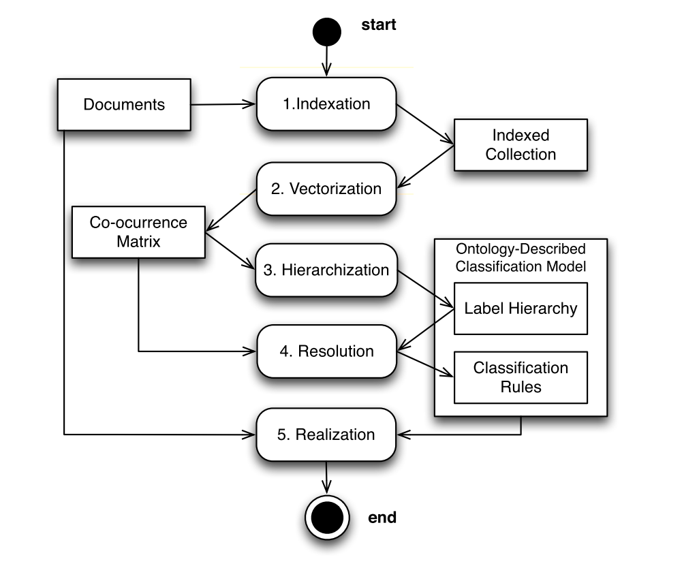
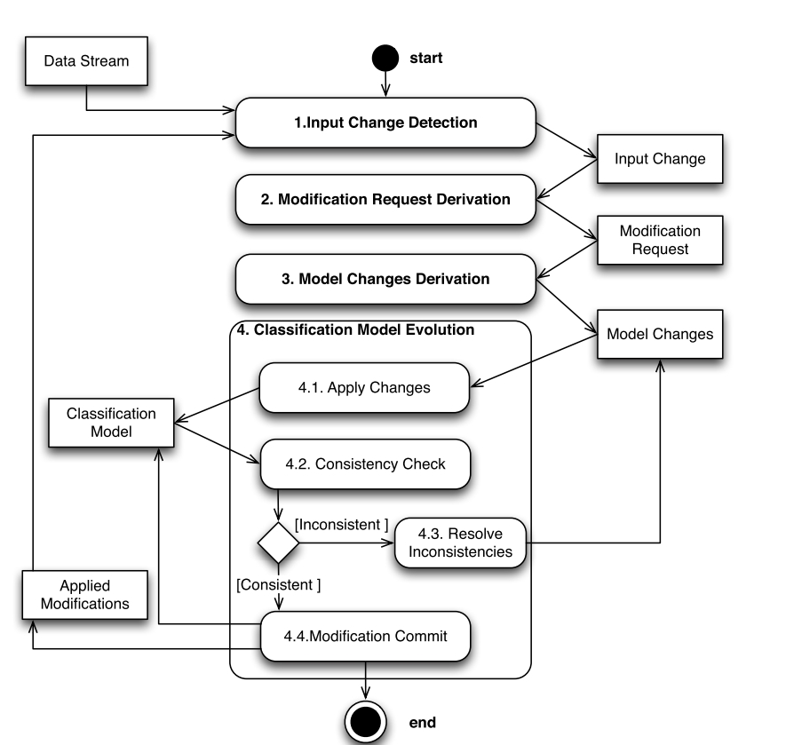

S-HMC Maintenance¶
Ces travaux ont fait l'objet de la thèse de Rafael Peixoto.
Contexte¶
La production de données croit de manière exponentielle donnant plus de crédit au phénomène des Big Data. Le terme masses de données ou Big Data fait référence aux jeux de données de très grandes tailles caractérisées par plusieurs dimensions (Volume, Velocité, Variété). Ces données ou flux de données sortent du cadre traditionnel des approches standards de traitement. C’est pourquoi l’extraction de connaissances et leur valeur de cette extraction sont des éléments complexes à traitement à la fois pour les industriels et les consommateurs pour réduire la surcharge d’information.
Bien que les méthodes traditionnelles d’analyse de données dans le champ de recherche de la fouille de données semblent être adaptées pour le traitement des données massives (cf. la classification hiérarchique multiétiquette), ces méthodes échouent dans l’identification de la sémantique des données formant une compréhension abstruse et réduisant la valeur. Les ontologies forment une solution pour les systèmes opérant proche des niveaux de conceptualisation humaine, et représente une des formes les plus acceptées pour décrire et capturer la sémantique dans les communautés scientifiques du Web sémantique et les industriels exploitant ces technologies.
L’association de ces technologies avec les technologies du traitement des données massives est la clé de l’approche proposée pour améliorer l’extraction de valeur dans le Big Data réduisant ainsi l’écart entre les perspectives des utilisateurs et les méthodes d’analyse (cf. les modèles de classification). Les objectifs de ces travaux sont doubles. D’une part, ces travaux proposent une nouvelle méthode de classification pour la multiclassification hiérarchique d’articles selon une ontologie enrichie en règle et l’usage des méthodes du "Web Resoning". D’autre part, ces travaux proposent une approche pour maintenir et faire évoluer le système de classification dans le contexte du Big Data et des flux de données non stationnaires.
The research scope¶
Big Data analysis can be deemed as the analysis technique for a special kind of data. The analysis of Big Data is the final and most important phase in the value chain of Big Data, with the purpose of extracting values that provide suggestions or decisions [Chen et al., 2014]. Therefore, many traditional data analysis methods such as Data Mining Algorithms (Classification, clustering, regression, among others) may still be utilized for Big Data Analysis [Chen et al., 2014]. The aim is to study the maintainability of a classification process that classifies data items according to an ontology-described classification model using a web reasoner in the context of Big Data. Therefore three main research areas define the scope of this research.
- Big Data: The term of Big Data is mainly used to describe enormous datasets characterized by an increasing number of V’s (Volume, Velocity, Variety, Veracity, Value). Such amount of data requires new forms of processing to enable enhanced decision-making, insight discovery and process optimization. This thesis focuses on automatically classified data items in the context of Big Data.
- Classification: Classification is a machine-learning method used to predict different classes according to some constrains and to create a model to classify newly available data. In recent years, many approaches have been proposed to further improve classification performance by incorporating label correlations or exploiting label hierarchy. Among all existing types of classification, this thesis focuses on a specific type of classification that exploits connections in label hierarchy called Hierarchical Multi-Label Classification (HMC).
- Ontologies: Ontologies allow the definition of terms and meanings used to represent areas of knowledge. Ontologies are a good solution for intelligent compsystems that operate close to a human concept level bridging the gap between human requirements and the computational requirements [Obrst, 2003]. From an ontology scope, this thesis aims to use ontologies to describe the classification model, ontology evolution to evolve the classification model according to data streams, and web reasoning to classify the items.
Since scalability is important in Big Data context, simple but highly scalable techniques are used in order to improve it compared to traditional classification approaches. The used techniques must allow the parallelization of the process and distribute it across several loosely coupled machines. The number of labels in many domains keeps growing during this, and even simple approaches can easily become computationally infeasible, not to mention the more sophisticated and computationally demanding approaches. To automatically analyse and describe data items in Big Data context, the number of labels can be even bigger. To study the maintainability of the classification process, two main approaches of classification exist [Ditzler et al., 2015]:
- The first consists in learning the classification model from a static set of items (batch learning). In this case, a static classification model is created and all new documents are classified according to that classification model. Hence, no change to the classifications is made from one moment to another moment. E.g. once an item is classified with a set of labels, those labels will remain the same independently of the moment of the classification.
- The second consists in incrementally learning the classification model according to a stream of items. In this case,the classification model evolves with new documents used to train the classifier. Hence, the classification result for an item can change. E.g. an item classified in different moments can be classified with different labels.
Learning classification¶
The Semantic HMC is composed of five individually scalable steps to reach the aims of Big Data analytics:

- Indexation extracts terms from data items and creates an index of data items.
- Vectorization calculates the term-frequency vectors of the indexed items.
- Hierarchization creates the label taxonomy (i.e. subsumption hierarchy) using term-frequency vectors.
- Resolution describes taxonomy concepts using relevant terms and creates the reasoning rules to classify data items with labels based on term-frequency vectors.
- Realization populates the ontology with items and then determines, for each item, the most specific label and all its subsuming labels.
Adaptive process according to a stream of items¶
The classification model’s adaptive process is the set of activities necessary to maintain the classification model in accordance with the data stream, but independent of any particularities of the modification and model change types. The process uses a Single-model incremental approach [Hulten et al., 2001, Wang, 2006] where the classification model is incrementally adapted regarding new data.

Publications¶
- Adaptive learning process for the evolution of ontology-described classification model in big data context, R Peixoto, C Cruz, N Silva, SAI Computing Conference (SAI), 2016, 532-540
- An unsupervised classification process for large datasets using web reasoning R Peixoto, T Hassan, C Cruz, A Bertaux, N Silva, Proceedings of the International Workshop on Semantic Big Data, 9
- Analyse Sémantique du Big Data par Classification Hiérarchique Multi-Label H Thomas, R Peixoto, C Cruz, A Bertaux, N Silva extraction et Gestion des Connaissances
- Extraction de la Valeur des données du Big Data par classification multi-label hiérarchique sémantique T Hassan, R Peixoto, C Cruz, A Bertaux, N Silva, 12ème atelier sur la Fouille de Données Complexes (FDC)
- Hierarchical Multi-Label Classification Using Web Reasoning for Large Datasets, R Peixoto, T Hassan, C Cruz, A Bertaux, N Silva, Open Journal of Semantic Web (OJSW) 3 (1), 1-15, 2016
- Semantic HMC for big data analysis, T Hassan, R Peixoto, C Cruz, A Bertaux, N Silva, Big Data (Big Data), 2014 IEEE International Conference on, 26-28, 2014
- Semantic hmc for business intelligence using cross-referencing R Peixoto, H Thomas, C Cruz, A Bertaux, N Silva, 14th International Conference on Informatics in Economy, 2015
- Semantic HMC: a predictive model using multi-label classification for big data, R Peixoto, T Hassan, C Cruz, A Bertaux, N Silva, Trustcom/BigDataSE/ISPA, 2015 IEEE 2, 173-179,2015
- Semantic HMC: Ontology-Described Hierarchy Maintenance in Big Data Context, R Peixoto, C Cruz, N Silva, OTM Confederated International Conferences" On the Move to Meaningful, 2015
Les partenaires¶
Pr. Nuno Silva ISEP - Instituto Superior de Engenharia do Porto, Portugal